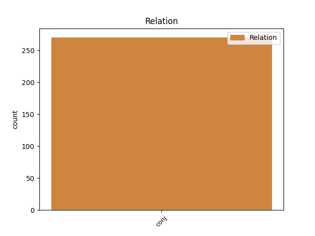
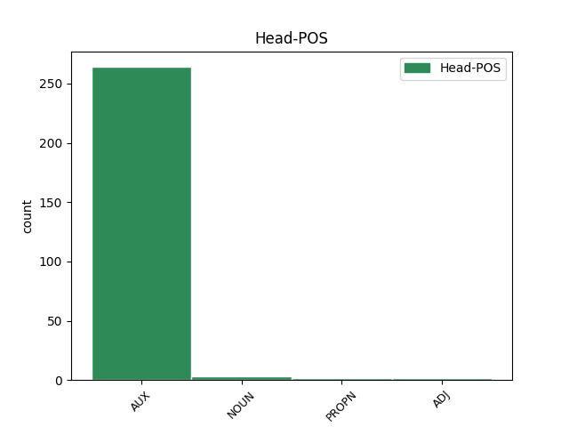
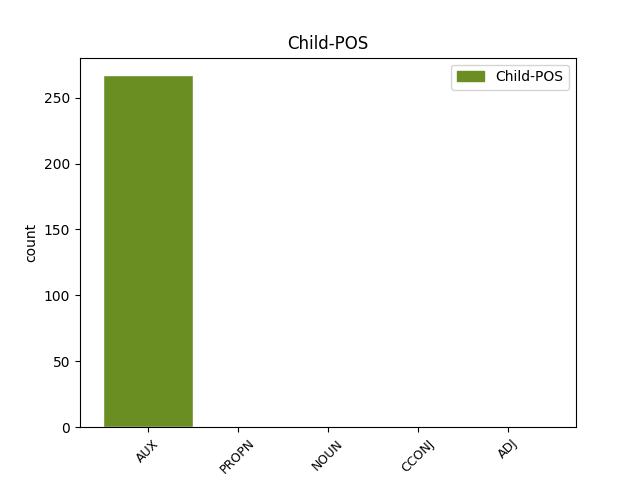

Distribution of features within this leaf



Agreement Rules sorted by frequency.
- When the dependent token is the conjunct(conj) of the head token, and the head token is AUX and the dependent token is AUX.
1 Der _ _ _ _ 0 _ _ _
2 Jeansstoff _ _ _ _ 0 _ _ _
3 war sein AUX VAFIN Mood=Ind|Number=Sing|Person=3|Tense=Past|VerbForm=Fin 0 _ _ _
4 oft _ _ _ _ 0 _ _ _
5 nicht _ _ _ _ 0 _ _ _
6 vorgewaschen _ _ _ _ 0 _ _ _
7 , _ _ _ _ 0 _ _ _
8 wodurch _ _ _ _ 0 _ _ _
9 neue _ _ _ _ 0 _ _ _
10 Jeans _ _ _ _ 0 _ _ _
11 zunächst _ _ _ _ 0 _ _ _
12 sehr _ _ _ _ 0 _ _ _
13 steif _ _ _ _ 0 _ _ _
14 und _ _ _ _ 0 _ _ _
15 wenig _ _ _ _ 0 _ _ _
16 bequem _ _ _ _ 0 _ _ _
17 zu _ _ _ _ 0 _ _ _
18 tragen _ _ _ _ 0 _ _ _
19 waren sein AUX VAFIN Mood=Ind|Number=Plur|Person=3|Tense=Past|VerbForm=Fin 3 conj _ SpaceAfter=No
20 . _ _ _ _ 0 _ _ _
1 Die _ _ _ _ 0 _ _ _
2 Mischung _ _ _ _ 0 _ _ _
3 aus _ _ _ _ 0 _ _ _
4 spielen spielen NOUN VVFIN Mood=Ind|Number=Plur|Person=3|Tense=Pres|VerbForm=Fin 0 _ _ _
5 , _ _ _ _ 0 _ _ _
6 raufen raufen NOUN VVFIN Mood=Ind|Number=Plur|Person=3|Tense=Pres|VerbForm=Fin 4 conj _ _
7 und _ _ _ _ 0 _ _ _
8 lernen _ _ _ _ 0 _ _ _
9 ist _ _ _ _ 0 _ _ _
10 echt _ _ _ _ 0 _ _ _
11 super _ _ _ _ 0 _ _ _
12 -- _ _ _ _ 0 _ _ _
13 und _ _ _ _ 0 _ _ _
14 nebenbei _ _ _ _ 0 _ _ _
15 wird _ _ _ _ 0 _ _ _
16 auch _ _ _ _ 0 _ _ _
17 noch _ _ _ _ 0 _ _ _
18 darauf _ _ _ _ 0 _ _ _
19 Wert _ _ _ _ 0 _ _ _
20 gelegt _ _ _ _ 0 _ _ _
21 , _ _ _ _ 0 _ _ _
22 dass _ _ _ _ 0 _ _ _
23 alle _ _ _ _ 0 _ _ _
24 vernünftig _ _ _ _ 0 _ _ _
25 miteinander _ _ _ _ 0 _ _ _
26 umgehen _ _ _ _ 0 _ _ _
27 . _ _ _ _ 0 _ _ _
1 Bourgelat _ _ _ _ 0 _ _ _
2 war sein AUX VAFIN Mood=Ind|Number=Sing|Person=3|Tense=Past|VerbForm=Fin 0 _ _ _
3 bei _ _ _ _ 0 _ _ _
4 seinem _ _ _ _ 0 _ _ _
5 Amtsantritt _ _ _ _ 0 _ _ _
6 gerade _ _ _ _ 0 _ _ _
7 achtundzwanzig _ _ _ _ 0 _ _ _
8 Jahre _ _ _ _ 0 _ _ _
9 alt _ _ _ _ 0 _ _ _
10 und _ _ _ _ 0 _ _ _
11 hatte haben CCONJ VAFIN Mood=Ind|Number=Sing|Person=1|Tense=Past|VerbForm=Fin 2 conj _ _
12 zu _ _ _ _ 0 _ _ _
13 diesem _ _ _ _ 0 _ _ _
14 Zeitpunkt _ _ _ _ 0 _ _ _
15 noch _ _ _ _ 0 _ _ _
16 nichts _ _ _ _ 0 _ _ _
17 vorzuweisen _ _ _ _ 0 _ _ _
18 , _ _ _ _ 0 _ _ _
19 was _ _ _ _ 0 _ _ _
20 ihn _ _ _ _ 0 _ _ _
21 für _ _ _ _ 0 _ _ _
22 die _ _ _ _ 0 _ _ _
23 Berufung _ _ _ _ 0 _ _ _
24 auf _ _ _ _ 0 _ _ _
25 einen _ _ _ _ 0 _ _ _
26 solch _ _ _ _ 0 _ _ _
27 herausgehobenen _ _ _ _ 0 _ _ _
28 Posten _ _ _ _ 0 _ _ _
29 qualifiziert _ _ _ _ 0 _ _ _
30 hätte _ _ _ _ 0 _ _ _
31 . _ _ _ _ 0 _ _ _
1 2006 _ _ _ _ 0 _ _ _
2 wurde _ _ _ _ 0 _ _ _
3 die _ _ _ _ 0 _ _ _
4 vollständig _ _ _ _ 0 _ _ _
5 auf _ _ _ _ 0 _ _ _
6 vermögende _ _ _ _ 0 _ _ _
7 Anleger _ _ _ _ 0 _ _ _
8 in _ _ _ _ 0 _ _ _
9 Deutschland _ _ _ _ 0 _ _ _
10 ausgerichtete ausgerichtet ADJ ADJA Mood=Ind|Number=Sing|Person=3|Tense=Past|VerbForm=Fin 0 _ _ _
11 und _ _ _ _ 0 _ _ _
12 auf _ _ _ _ 0 _ _ _
13 die _ _ _ _ 0 _ _ _
14 Umsetzung _ _ _ _ 0 _ _ _
15 von _ _ _ _ 0 _ _ _
16 " _ _ _ _ 0 _ _ _
17 steueroptimierten _ _ _ _ 0 _ _ _
18 Anlagestrategien _ _ _ _ 0 _ _ _
19 " _ _ _ _ 0 _ _ _
20 spezialisierte spezialisiert ADJ ADJA Mood=Ind|Number=Sing|Person=3|Tense=Past|VerbForm=Fin 10 conj _ _
21 Bankhaus _ _ _ _ 0 _ _ _
22 Jungholz _ _ _ _ 0 _ _ _
23 International _ _ _ _ 0 _ _ _
24 Private _ _ _ _ 0 _ _ _
25 Banking _ _ _ _ 0 _ _ _
26 AG _ _ _ _ 0 _ _ _
27 gegründet _ _ _ _ 0 _ _ _
28 . _ _ _ _ 0 _ _ _
1 Später _ _ _ _ 0 _ _ _
2 stoß stoßen ADJ VVFIN Mood=Ind|Number=Sing|Person=3|Tense=Past|VerbForm=Fin 0 _ _ _
3 Oleksij _ _ _ _ 0 _ _ _
4 Katruk _ _ _ _ 0 _ _ _
5 dazu _ _ _ _ 0 _ _ _
6 und _ _ _ _ 0 _ _ _
7 es _ _ _ _ 0 _ _ _
8 wurde werden AUX VAFIN Mood=Ind|Number=Sing|Person=3|Tense=Past|VerbForm=Fin|Voice=Pass 2 conj _ _
9 eine _ _ _ _ 0 _ _ _
10 erste _ _ _ _ 0 _ _ _
11 Demo _ _ _ _ 0 _ _ _
12 aufgenommen _ _ _ _ 0 _ _ _
13 . _ _ _ _ 0 _ _ _
1 Er _ _ _ _ 0 _ _ _
2 gehörte gehören NOUN VVFIN Mood=Ind|Number=Sing|Person=3|Tense=Past|VerbForm=Fin 0 _ _ _
3 als _ _ _ _ 0 _ _ _
4 Student _ _ _ _ 0 _ _ _
5 ( _ _ _ _ 0 _ _ _
6 Studium _ _ _ _ 0 _ _ _
7 der _ _ _ _ 0 _ _ _
8 Geschichte _ _ _ _ 0 _ _ _
9 , _ _ _ _ 0 _ _ _
10 Germanistik _ _ _ _ 0 _ _ _
11 und _ _ _ _ 0 _ _ _
12 neueren _ _ _ _ 0 _ _ _
13 Sprachen _ _ _ _ 0 _ _ _
14 an _ _ _ _ 0 _ _ _
15 der _ _ _ _ 0 _ _ _
16 Universität _ _ _ _ 0 _ _ _
17 Gießen _ _ _ _ 0 _ _ _
18 ) _ _ _ _ 0 _ _ _
19 der _ _ _ _ 0 _ _ _
20 " _ _ _ _ 0 _ _ _
21 Landsmannschaft _ _ _ _ 0 _ _ _
22 Chattia _ _ _ _ 0 _ _ _
23 Gießen _ _ _ _ 0 _ _ _
24 " _ _ _ _ 0 _ _ _
25 an _ _ _ _ 0 _ _ _
26 und _ _ _ _ 0 _ _ _
27 war sein AUX VAFIN Mood=Ind|Number=Sing|Person=3|Tense=Past|VerbForm=Fin 2 conj _ _
28 schon _ _ _ _ 0 _ _ _
29 in _ _ _ _ 0 _ _ _
30 dem _ _ _ _ 0 _ _ _
31 Wilhelminischen _ _ _ _ 0 _ _ _
32 Reich _ _ _ _ 0 _ _ _
33 ein _ _ _ _ 0 _ _ _
34 radikaler _ _ _ _ 0 _ _ _
35 Antisemit _ _ _ _ 0 _ _ _
36 . _ _ _ _ 0 _ _ _
1 Das _ _ _ _ 0 _ _ _
2 Wasser _ _ _ _ 0 _ _ _
3 von _ _ _ _ 0 _ _ _
4 dem _ _ _ _ 0 _ _ _
5 Kanal _ _ _ _ 0 _ _ _
6 ergoss ergießen PROPN VVFIN Mood=Ind|Number=Sing|Person=3|Tense=Past|VerbForm=Fin 0 _ _ _
7 sich _ _ _ _ 0 _ _ _
8 in _ _ _ _ 0 _ _ _
9 die _ _ _ _ 0 _ _ _
10 Ems _ _ _ _ 0 _ _ _
11 , _ _ _ _ 0 _ _ _
12 und _ _ _ _ 0 _ _ _
13 ein _ _ _ _ 0 _ _ _
14 Auslaufen _ _ _ _ 0 _ _ _
15 des _ _ _ _ 0 _ _ _
16 Kanals _ _ _ _ 0 _ _ _
17 konnte können AUX VMFIN Mood=Ind|Number=Sing|Person=3|Tense=Past|VerbForm=Fin 6 conj _ _
18 nur _ _ _ _ 0 _ _ _
19 durch _ _ _ _ 0 _ _ _
20 das _ _ _ _ 0 _ _ _
21 Schließen _ _ _ _ 0 _ _ _
22 des _ _ _ _ 0 _ _ _
23 etwa _ _ _ _ 0 _ _ _
24 200 _ _ _ _ 0 _ _ _
25 m _ _ _ _ 0 _ _ _
26 nordöstlich _ _ _ _ 0 _ _ _
27 gelegenen _ _ _ _ 0 _ _ _
28 Sperrtores _ _ _ _ 0 _ _ _
29 verhindert _ _ _ _ 0 _ _ _
30 werden _ _ _ _ 0 _ _ _
31 . _ _ _ _ 0 _ _ _
Disagree Examples:
1 Wir _ _ _ _ 0 _ _ _
2 sind sein AUX VAFIN Mood=Ind|Number=Plur|Person=1|Tense=Pres|VerbForm=Fin 0 _ _ _
3 seit _ _ _ _ 0 _ _ _
4 vielen _ _ _ _ 0 _ _ _
5 Jahren _ _ _ _ 0 _ _ _
6 Mandanten _ _ _ _ 0 _ _ _
7 der _ _ _ _ 0 _ _ _
8 Rechtsanwälte _ _ _ _ 0 _ _ _
9 Ruland _ _ _ _ 0 _ _ _
10 und _ _ _ _ 0 _ _ _
11 wurden werden AUX VAFIN Mood=Ind|Number=Plur|Person=3|Tense=Past|VerbForm=Fin|Voice=Pass 2 conj _ _
12 immer _ _ _ _ 0 _ _ _
13 optimal _ _ _ _ 0 _ _ _
14 in _ _ _ _ 0 _ _ _
15 bei _ _ _ _ 0 _ _ _
16 unseren _ _ _ _ 0 _ _ _
17 Probleme _ _ _ _ 0 _ _ _
18 und _ _ _ _ 0 _ _ _
19 Anliegen _ _ _ _ 0 _ _ _
20 unterstützt _ _ _ _ 0 _ _ _
21 . _ _ _ _ 0 _ _ _
1 Wir _ _ _ _ 0 _ _ _
2 haben haben AUX VAFIN Mood=Ind|Number=Plur|Person=1|Tense=Pres|VerbForm=Fin 0 _ _ _
3 uns _ _ _ _ 0 _ _ _
4 übrigens _ _ _ _ 0 _ _ _
5 3 _ _ _ _ 0 _ _ _
6 verschiedene _ _ _ _ 0 _ _ _
7 Zimmer _ _ _ _ 0 _ _ _
8 angesehen _ _ _ _ 0 _ _ _
9 und _ _ _ _ 0 _ _ _
10 alle _ _ _ _ 0 _ _ _
11 waren sein AUX VAFIN Mood=Ind|Number=Plur|Person=3|Tense=Past|VerbForm=Fin 2 conj _ _
12 eine _ _ _ _ 0 _ _ _
13 Katastrophe _ _ _ _ 0 _ _ _
14 . _ _ _ _ 0 _ _ _
1 Wir _ _ _ _ 0 _ _ _
2 haben _ _ _ _ 0 _ _ _
3 uns _ _ _ _ 0 _ _ _
4 mehrfach _ _ _ _ 0 _ _ _
5 bei _ _ _ _ 0 _ _ _
6 dem _ _ _ _ 0 _ _ _
7 Personal _ _ _ _ 0 _ _ _
8 beschwert _ _ _ _ 0 _ _ _
9 -- _ _ _ _ 0 _ _ _
10 das _ _ _ _ 0 _ _ _
11 Bett _ _ _ _ 0 _ _ _
12 wurde werden AUX VAFIN Mood=Ind|Number=Sing|Person=3|Tense=Past|VerbForm=Fin|Voice=Pass 0 _ _ _
13 zwar _ _ _ _ 0 _ _ _
14 mit _ _ _ _ 0 _ _ _
15 einer _ _ _ _ 0 _ _ _
16 weiteren _ _ _ _ 0 _ _ _
17 Matraze _ _ _ _ 0 _ _ _
18 ausgestattet _ _ _ _ 0 _ _ _
19 aber _ _ _ _ 0 _ _ _
20 das _ _ _ _ 0 _ _ _
21 hat haben AUX VAFIN Mood=Ind|Number=Sing|Person=3|Tense=Pres|VerbForm=Fin 12 conj _ _
22 nix _ _ _ _ 0 _ _ _
23 gebracht _ _ _ _ 0 _ _ _
24 . _ _ _ _ 0 _ _ _
1 Die _ _ _ _ 0 _ _ _
2 Bedienung _ _ _ _ 0 _ _ _
3 war _ _ _ _ 0 _ _ _
4 sehr _ _ _ _ 0 _ _ _
5 nett _ _ _ _ 0 _ _ _
6 und _ _ _ _ 0 _ _ _
7 immer _ _ _ _ 0 _ _ _
8 schnell _ _ _ _ 0 _ _ _
9 zu _ _ _ _ 0 _ _ _
10 der _ _ _ _ 0 _ _ _
11 Stelle _ _ _ _ 0 _ _ _
12 und _ _ _ _ 0 _ _ _
13 das _ _ _ _ 0 _ _ _
14 Essen _ _ _ _ 0 _ _ _
15 war sein AUX VAFIN Mood=Ind|Number=Sing|Person=3|Tense=Past|VerbForm=Fin 0 _ _ _
16 super _ _ _ _ 0 _ _ _
17 frisch _ _ _ _ 0 _ _ _
18 und _ _ _ _ 0 _ _ _
19 hat haben AUX VAFIN Mood=Ind|Number=Sing|Person=3|Tense=Pres|VerbForm=Fin 15 conj _ _
20 sehr _ _ _ _ 0 _ _ _
21 gut _ _ _ _ 0 _ _ _
22 geschmeckt _ _ _ _ 0 _ _ _
23 . _ _ _ _ 0 _ _ _
1 Ich _ _ _ _ 0 _ _ _
2 habe haben AUX VAFIN Mood=Ind|Number=Sing|Person=1|Tense=Pres|VerbForm=Fin 0 _ _ _
3 mehrere _ _ _ _ 0 _ _ _
4 ausprobiert _ _ _ _ 0 _ _ _
5 und _ _ _ _ 0 _ _ _
6 war sein AUX VAFIN Mood=Ind|Number=Sing|Person=3|Tense=Past|VerbForm=Fin 2 conj _ _
7 nie _ _ _ _ 0 _ _ _
8 richtig _ _ _ _ 0 _ _ _
9 zufrieden _ _ _ _ 0 _ _ _
10 . _ _ _ _ 0 _ _ _